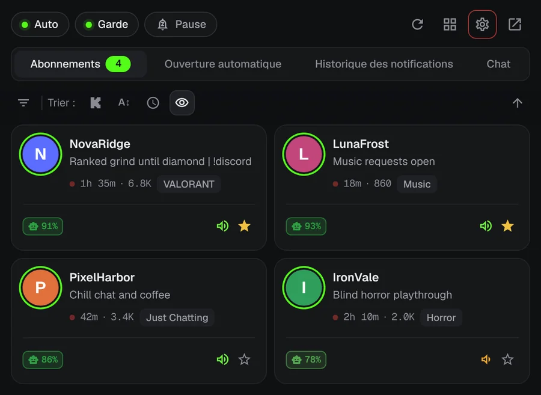
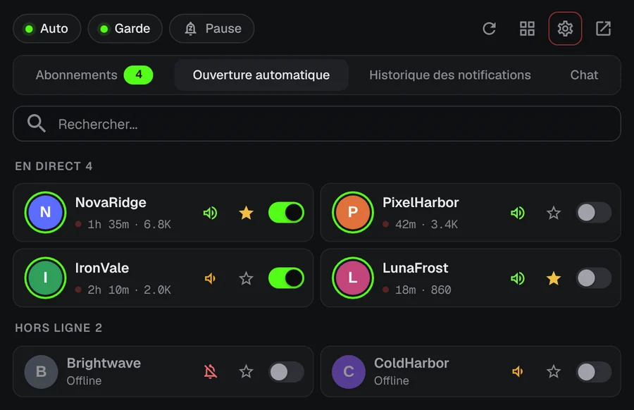
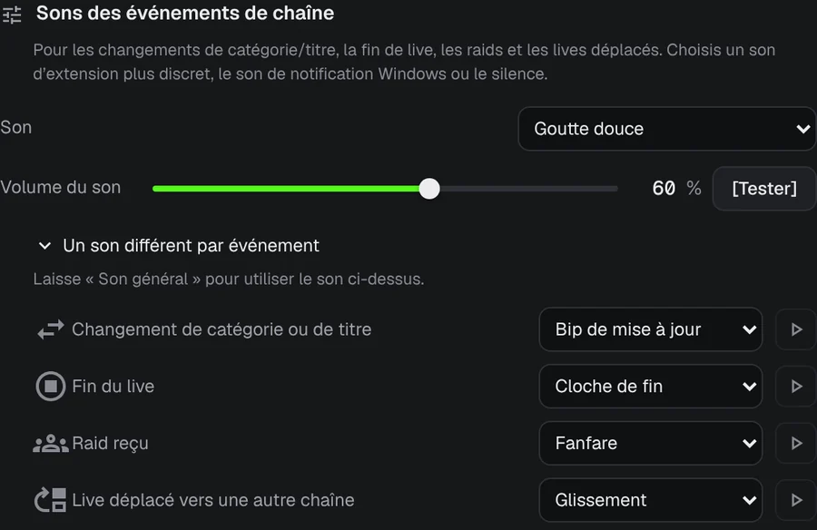
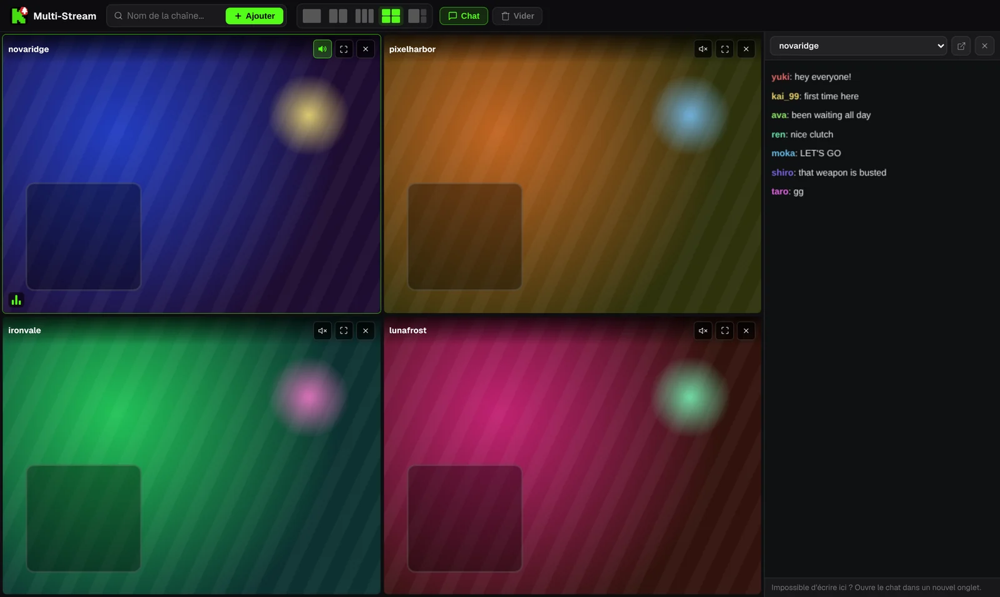

Ne rate plus jamais le début d’un live Kick.
Ton streamer préféré lance son live à 3 h du matin. KickAlert t’envoie une notification sur le bureau à ce moment précis, même sans onglet Kick ouvert. Gratuit, sans limite de chaînes et sans pistage.
Bientôt sur Edge et Opera
Essaie. Appuie sur une cloche.
Ces chaînes sont hors ligne. Active la cloche de l’une d’elles et regarde ce qui arrive quand elle passe en live.
Alertes instantanées
KickAlert écoute la connexion en temps réel de Kick : l’alerte arrive quand le live commence, pas des minutes plus tard. Choisis un son par chaîne, programme le mode Ne pas déranger ou mets tout en pause jusqu’au matin.

Ouverture automatique
Choisis les chaînes qui doivent s’ouvrir toutes seules. Le live s’ouvre dans un nouvel onglet dès qu’il démarre, sans doublon, et l’onglet peut se fermer si un raid envoie le live ailleurs.

Savoir ce qui s’est passé
Raids, fin de live, changement de catégorie et live déplacé peuvent chacun avoir leur alerte et leur son, chaîne par chaîne.

Radar de chat
Surveille jusqu’à 5 chats : tu reçois une notification quand ton pseudo ou un mot de ton choix y apparaît, même avec Kick fermé. Les filtres du chat masquent le spam et repèrent les mots écrits avec des lettres qui se ressemblent.
Jusqu’à quatre lives dans un seul onglet
Les lives démarrent en sourdine. Active le son de celui que tu veux d’un seul clic. Le chat se trouve dans un panneau sur le côté.

Contenu des lives à titre d’illustration.
Tes données restent dans ton navigateur
- Aucune analyse, aucun pistage
- Communique uniquement avec kick.com
- Chaque permission expliquée au premier lancement
- Code source public sur GitHub
Questions
KickAlert est-il gratuit ?
Oui. Toutes les fonctions sont gratuites, sans limite sur le nombre de chaînes suivies.
Dois-je garder Kick ouvert ?
Non. KickAlert tourne en arrière-plan et te prévient même sans onglet Kick ouvert. Il suffit d’être connecté à Kick dans le même navigateur.
Je l’ai installé mais je ne reçois aucune notification.
Les nouvelles installations démarrent en silence pour ne pas te submerger. Active la cloche des chaînes que tu veux, ou active-la pour toutes les chaînes d’un coup dans les Paramètres. La vérification « Recevras-tu une notification de cette chaîne ? » dans les paramètres de chaque chaîne montre ce qui pourrait encore bloquer une alerte.
Sur quels navigateurs fonctionne-t-il ?
Chrome et Firefox aujourd’hui, Edge et Opera arrivent. Brave, Vivaldi et les autres navigateurs Chromium peuvent l’installer depuis le Chrome Web Store.
Installer KickAlert
Bientôt sur Edge et Opera